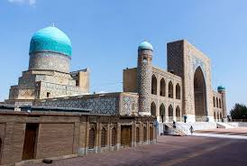

The Pearl of Uzbekistan
The Pearl of Uzbekistan
Samarkand is a city in Uzbekistan known for its mosques and mausoleums.
It's on the Silk Road, the ancient trade route linking China to the Mediterranean
Prominent landmarks include the Registan, a plaza bordered by 3 ornate,
majolica-covered madrassas dating to the 15th and 17th centuries,
and Gur-e-Amir, the towering tomb of Timur, founder of the Timurid Empire.
Weather: 24°C, Wind N at 14 km/h, 35% Humidity
Population: 519,231 (2016) United Nations
Postal code: 140100